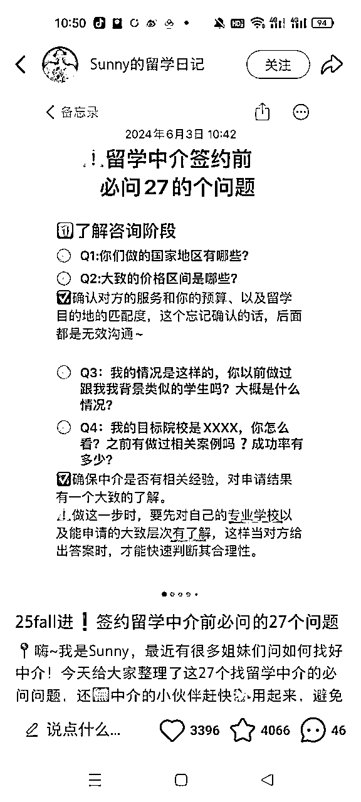
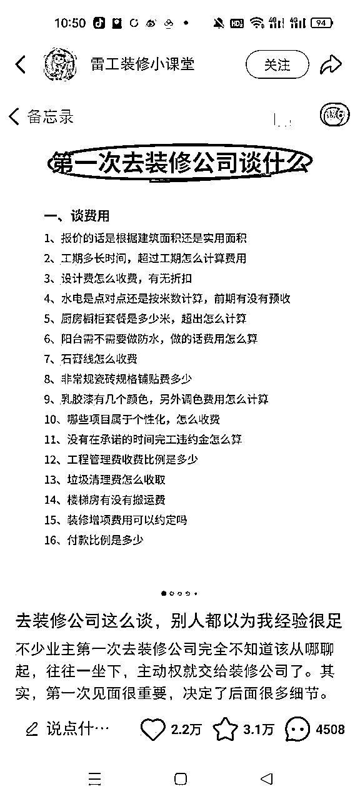
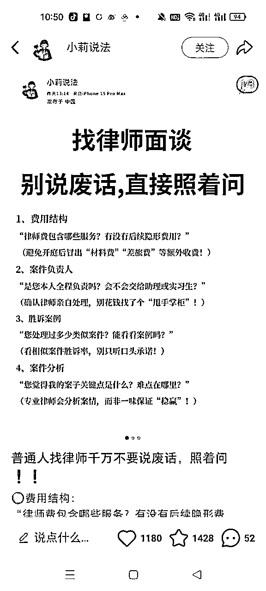
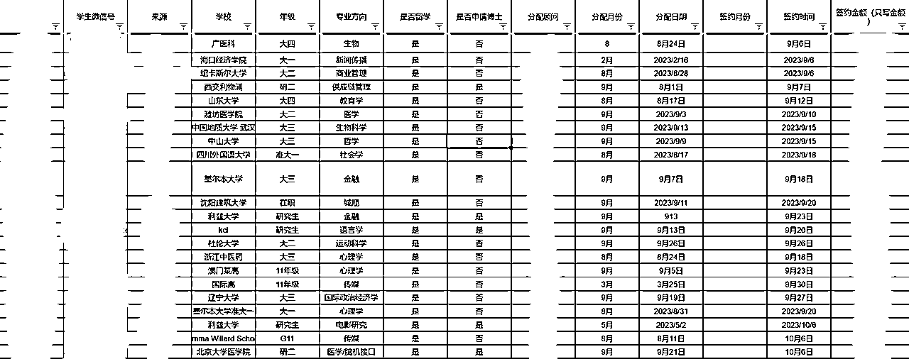
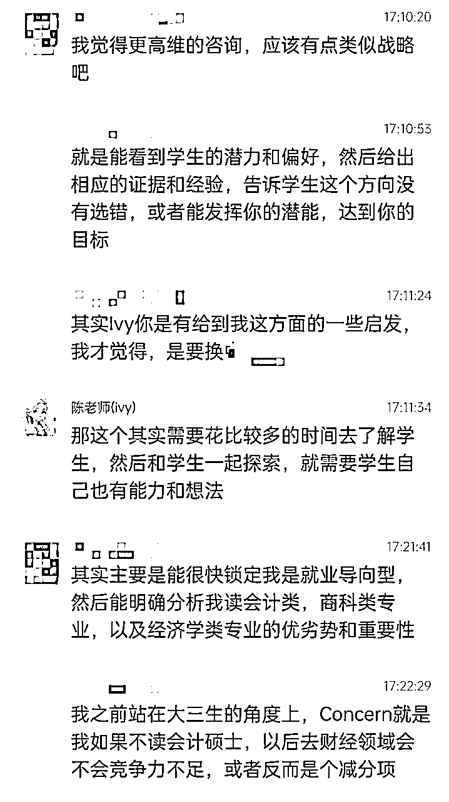
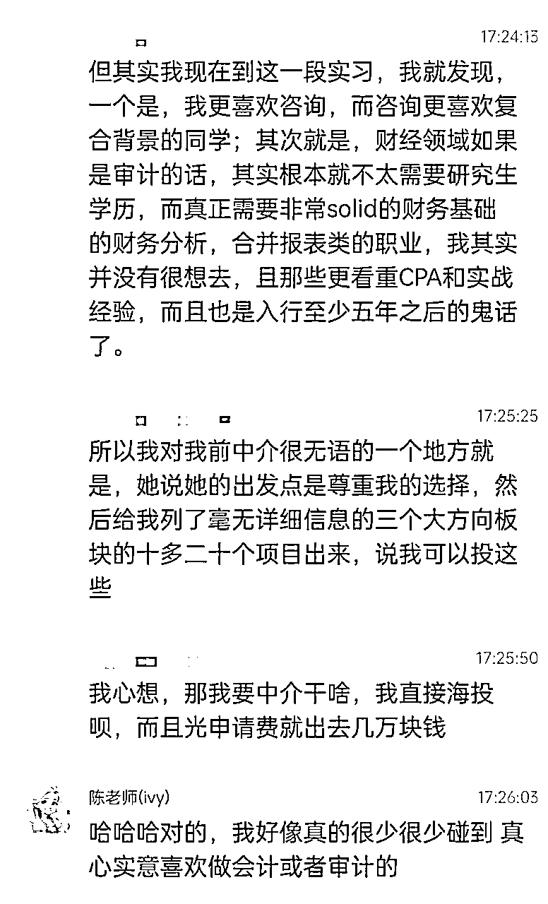
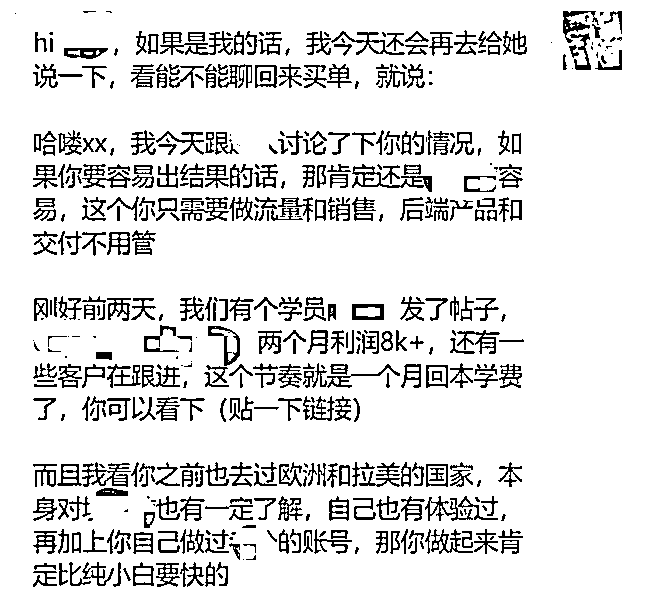
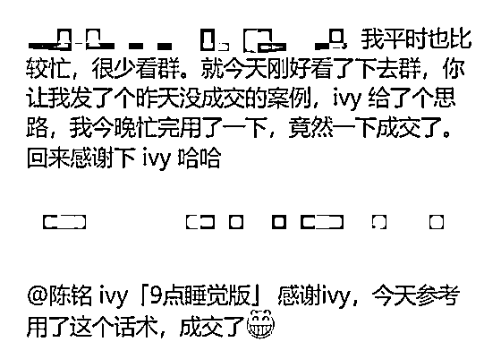

来源：https://ht16ej1tui.feishu.cn/docx/IKFSdqm0aohi0YxLIXTclIyinyb
大家好，我是陈铭ivy，过去4年一直聚焦小红书高客单领域。
在22-23年，我和珍妮子，在留学赛道做出了两年2700万销售额的成绩。
24年我们转型做知识付费，主要战场还是小红书高客单，同时认识了很多新朋友，打通小红书引流的任督二脉后，新的问题就是客户到私域的转化率不高，只有1-3%。
而我们当时在留学赛道卖3-5万客单价的产品，转化率可以达到7-10%，甚至旺季可以做到10%以上。
所以接下来，我会详细拆解，我们是如何不断与合作方磨合，优化销售路径，达成7-10%的转化率的。
本文目录：
甘蔗没有两头甜，要么吃做IP的苦，要么吃销售的苦，两头总得选一头。当然，如果你既做了IP，又愿意沉下心来按无IP销售的SOP和心法去对待客户，那你的签单率一定比只吃一头苦的同行高。
在聊什么是【对的】销售SOP之前，我们先来聊聊什么是【错的】销售做法
先来互动一下，你觉得以下哪种客户是聊起来难度最高的？
A. 很多问题，一个接一个的问你
B. 不怎么说话，你说一句他接一句
C. 一上来就要电话沟通
Ivy 觉得对新手销售来说，最难聊的是B。
A和C都是好聊的，因为客户会主动问你，他在提问题的过程中，会暴露他的需求和痛点，不管这个客户成不成交，你有机会向他全面的介绍我们的产品和公司。
但如果是B客户的话，他不主动提问，销售又不知道该和他说什么的情况下，就会问客户：你还有什么问题想问我吗？
这时候很多客户会说：没有。
因为他不了解你的产品，他不知道他可以问什么。
这也是为什么【签约XX前必问的X个问题】在小红书上一直是一个非常火的跨赛道选题，因为很多人就是不知道自己应该提什么问题。



那如何接待这种不爱说话的客户呢？ivy会在下文给到解决方案。
有些友友觉得自己这个行业很卷，客户都是来比价的。确实有部分客户，就是喜欢比价，一上来就问价格。
但同时也有一些客户，他是因为对产品不了解，不知道自己除了价格还能问什么，所以才会问价格。
这时候如果销售直接报价了，那客户很可能就不说话了，销售就会认为：这个客户是来比价的，他问了价格就走了。
但其实不是的，你只给了客户一个价格，那客户不就只能比价格吗？他也没有别的东西比呀。
以ivy做高客单4年的经验来说，能付五位数以上的客户，他就算要考虑价格，也不会是单纯只考虑哪家便宜。所以我们要给到客户尽可能多的信息，让他去比，引导他去比，让他比完觉得：还是你这里合适，他才会下单。
面对一上来就问价的客户，如果你想成交他，就一定要做到，价值不到，价格不报。
那具体如何回复这样的客户？ivy也会在下文给到解决方案。
这个误区，是ivy的血泪教训。很多年前，在我刚开始做销售的时候，在留学赛道卖一个3w客单价的产品。
有一天来了一个客户咨询，他回我回的很慢，有一搭没一搭的，我心想他可能在忙，而且这个产品又贵，所以我就没有太着急，想着：没事，3万块钱的产品他也不会当天买单，就慢慢跟吧。
结果第二天，我再去问他，他说昨天和朋友已经在别家签单了。我当时简直晴天霹雳：救命，还是贫穷限制了我的想象力，6万块钱的产品原来还真有有钱人是可以当天付款的!!
这种情况在当下小红书遍地同行和截流手的现状下，只会越来越多，如果你的潜在客户回复你很慢，那么他很可能在和你的同行聊！聊着聊着就给你的同行交了钱。
那要如何把这样的客户拉回来成交？ivy也会在下文给到解决方案。
销售成交的过程，不是从接到客户，开始私聊，才开始的，远在那之前，就已经开始了。
举个例子，我自己在小红书找律师的时候，加了一堆律师客服微信。
有一些客服，又让我加一个销售的企业微信，这等于要客户多做一步事情，当我有好几个销售同时在聊的时候，我就懒得再加新销售了。
多一步操作，就会多损失一些客户。
但是有的客服会拉群，把我和销售拉到一个群里，这样我就是愿意说话的，会继续跟销售聊。
所以避免1.3误区出现的最佳办法就是，尽量减少客户的动作，能拉群就不要让他再加一个人私聊，把【客户回复慢/不回复】这件事，扼杀在萌芽。
销售团队运行一段时间后，我们会得到一些签约数据。比如在留学行业，我们会按客户的学历背景，来给客户分等级，如图

根据不同人群的签约率，我们会把客户分为几类：
这是最有钱的客户，他们一年学费20+w，未来再读本科+研究生还得准备几百万，是销售的重点跟进对象，签约率也是最高的，可以到10+%。
这类人群的付费能力也还不错，需要重点跟进。
这类人群要看情况，如果是要留学的，付费能力会比考保研的要强，正常跟进。
基本上不太可能买单，销售不用花太多心思。
在客户接触到销售之前，我们的流量小助手就会先询问客户的背景情况，根据背景情况来决定后续和客户沟通的话术；将客户分级后，销售系统内，也会根据不同客户的等级，有不同的跟进提醒。
比如一级客户，海高国际高在读的，我们会强制要求销售在接到客户的前三天，每天都去跟进；但四级客户，申国内博的，我们就不会有这么频繁的跟进要求。
根据不同级别客户的买单率来实时调整，接待话术和跟进频率，可以提高销售的转化率和工作幸福感。
因为销售的时间是有限的，如果他对每个客户都一视同仁，分配相同的时间，那是对【有较高可能签约的客户】的不尊重。
同样的时间，我们要投入到roi高的人身上。如果销售在四级客户身上花费了大量时间，但又没有签约，那对销售本人来说是很大的消耗，也会影响士气。
有做过销售的友友应该都知道，销售流程可以分为4个环节：
我们就以这4个环节来看看，好的销售应该在每个环节分别做些什么。
挖需是销售私聊第一步，也就是搞清楚【客户为什么想来了解我的产品？】，【我的产品有很多功能，客户最需要的是哪个？】
这一步没有聊清楚，后面的传递产品价值就很难打到客户的痛点上，因为可能你打的点根本不是他想要的点。
比如说，当我们要卖一个夏令营产品的时候，要先搞清楚，客户想了解夏令营的原因是什么？
可能是感兴趣来问问
可能是为了他的留学申请加分
可能是为了他的考保研加分
可能是想要体验国外的教育环境
可能是想要拿一封推荐信或者发表论文
......
产品都是同一个产品，但这些不同的动机就决定了我们后续可以用什么资料/信息来引起客户兴趣，或者是在客户不回复了之后用什么物料来唤醒他。
同时，在这个环节里，挖需不仅仅是挖需求，还要挖【客户可能拒绝你的理由】。
有些做销售的友友可能有过这样的经历，跟客户聊了很久，以为能签单了，结果客户说：
我妈/我对象不同意
我那个时间有别的安排，跟你们的项目冲突了
我家里有关系，给我安排了同样的资源
......
为了避免出现这样的悲伤情况，最好的办法就是未雨绸缪，把这些拒绝你的可能性都在挖需环节排雷掉，提前打探客户可能会出现的异议。
比如当我们在卖留学申请产品的时候，可以问客户：
你爸妈同意你去留学吗？他们会支持你所有留学费用吗？
你家里有高校老师资源可以给你安排项目吗？
这个项目时间你是有空的不？
最后，挖需还有一个注意点，就是挖到需了，得做出回应，不要让客户的话掉到地上，也不要明知不可能还强行推荐。
比如客户说：我想了解这个美国夏令营是因为我明年要申请美国，你就可以说，那正好呀，我们挺多学生也是这个想法，去年有X个参加项目的学生录取到了美国的XX大学和XX大学，我给你看下他们的案例。
又比如客户说：我只有10天时间能参加夏令营，那就不要给他推荐一个12天的营然后让他缺席两天。没有人会喜欢付钱买一个自己不能全程享受服务的产品。
挖需挖到位后，就可以进入传递产品价值的环节。
在这个部分，所有新手销售，都可以有一个自己的销售流程list，和客户沟通的时候，拿出来打钩，哪个点，我已经给客户讲透了，就打个钩，哪个点，还没讲的，就可以作为明天，后天再来唤醒客户的素材。
这个list 就可以作为楼上3个误区的解决方案。
客户不说话，不知道问什么，或者客户回复慢，没关系，客户爸爸们，请看我的solo表演：
产品信息：
产品包含什么内容？由谁来交付？可以使用多久？有哪些功能？和同行产品PK有什么区别？
公司背景：
公司有什么title和背书？我们在行业里是什么地位？我们是否有线下办公室？我们公司成立了多久？是否有比较牛的投资机构？
配套服务：
由谁来提供什么服务？服务多久？能达到什么效果？
客户案例：
最好选取和该客户高度相关的案例发给他
客户证言/好评：
可以把客户好评整理成公众号的好评墙，深不见底的好评墙会带来很强大的震撼效果
经常被问到的问题：
这个大家可以根据自己行业和产品来整理常见问题以及回答，在客户问到的时候，直接复制粘贴过去，比较省时间。
一些通用的常见问题：
我现在xxx，是不是先xxx，再来买你的产品比较好？
别家也是xxx服务，还比你们便宜1000块
如果你服务的人多：你们一年带这么多客户怎么保证质量？
如果你服务的人少：你们服务的案例这么少，有做过我这个领域的吗？
我有朋友没买你们这种产品，自学成才拿到结果了，我是不是也不需要？
我拉几个朋友一起报名，你能给我打折吗？
我需要和父母商量下
解决异议是比较case by case的一个部分，因为每个客户的异议可能都不一样。面对同样的异议，不同的客户诉求，需要给出的回答侧重点也会不一样。
这一部分比较依赖销售个人经验与他过往的知识积累。
在这里我也分享2个解决异议的基础原则：
客户找你要优惠，如果你能优惠，你就找他要付款时间的确定性
如果你不能优惠，你就让他做一些行动或承诺，然后给他送东西
举个例子：
客户说：给我优惠1000可以吗
你可以说：你今天能定吗？能定的话，我去跟老板申请优惠
又或者说：咱们都是全国统一价呢，后续你给我们推荐朋友来参加的话，会给你xx推荐费；或者你帮我发个朋友圈，我给你送xxxx，对你xxx有帮助
总之，一定要有来有回，不能他一说要优惠，你就立马无条件同意，这样他就算拿到了优惠也不会开心。
就好像小时候你妈带你去买衣服，摊主说300，你妈还价说150，摊主说成交，你妈一拍大腿：买贵了！
如果客户说：我要和我妈商量下
销售说：好的
很可能这场销售就无疾而终了，客户消失在人海，而你也不知道他为什么消失。
所以在他消失前，我们要尽量避免这种情况发生。在客户提出要跟父母沟通项目相关问题的时候，需要提前确认客户关于项目有没有什么不确定因素，和相关细节问题包括：项目价值，项目细节，公司品牌，项目成果等等。
最好是能引导客户建群，直接和关键决策人沟通，如果客户不愿意，那就教他如何跟家长反馈，传递正确信息。
比如在和客户咨询后，总结文字版给客户发今天聊的内容：
今天我们聊了1个多小时，分析出来做这个项目是有利于你成功申请国外大学的，正好你也需要跟父母去反馈情况，我给你总结一下有几个点可以直接转给父母的：
或者说：
可以的呀，咱们毕竟还是学生，经济部分肯定还是需要父母的支持，也是需要和父母沟通的。我也帮咱们梳理一下大部分父母比较关心的问题哈：
我们是国内行业内规模最大的独角兽公司，xxxxx（公司背书）
通过项目咱们可以xxxxxx（项目会给个人带来什么提升）
以上内容说完后，还要问一下客户什么时候去和父母商量，再约定好下次回访时间。
终于来到最后一步关单签约啦。
在这一步，我们可以查漏补缺，看看还有什么信息是没传递给客户的，在客户开口问之前，主动给他说，这样客户的体验也会更好，他会觉得：我正好想问这个，但我还没开口，你就主动告诉我了，你好懂我！
如果客户表达出想要签约/购买的意向，就可以给他描绘他付款后我们会提供什么样的服务，会给到他怎样的帮助，然后问他，那你要不要今天安排呀？
如果可以，成交不要过夜，因为夜长梦多，很可能第二天会有变数，所以能当天成交，就尽量让客户当天成交。
当然，也会有一些专家型IP的价值观是：给客户充足的时间考虑，哪怕客户要买单了，他也要让客户再想想，慎重考虑。两种不同价值观，大家选择适合自己的就行
如果客户跟你聊的很好，但客户暂时用不到这个服务，要过半年一年才用到，怎么逼单呢？
比如，虽然我这个夏令营要过半年才开，但是我限额10人，目前只剩2个名额，你不定就没有了，而且你早点定下来，早点买机票，也是更便宜的。
比如说，如果你卖澳大利亚定制游，客人4月来找你询单，但是春节才过去旅游，你就可以先收500定金做行程规划，后面快到春节，再收首付款。
以上逼单方法，你可以选择是否采用哦~也有一些IP是从不逼单的。
对无IP销售来说，能打电话的客户，一定是比不愿意打电话的客户更好成交的。
那要怎样才能让客户，更愿意和我们打电话呢？
有的销售会一上来就说：我给你语音介绍下我们的产品吧
很多客户就会拒绝：不方便语音，你给我发语音条或者产品pdf吧
因为销售的这个说法，完全是站在自己的利益角度出发，我给你打语音能方便我更好的介绍和成交你，所以我要占用你的时间给你打语音。
那客户拒绝就是很正常的。
但如果我们先文字了解客户的基本情况和诉求，再根据客户的诉求，来提出打语音的请求，客户同意的概率就会大很多。
比如当我卖一个对申博有帮助的产品，而我的客户需要申博时，我可以说：
小姐姐什么时候方便呢？我给你语音说一下，我们的产品可以怎样用到你的博士申请里面，以及你后续读博的话，可以怎样更好的利用从我们这边学到的论文写作技术。
又比如当我卖澳大利亚旅游时，我可以说：
小姐姐什么时候方便呢？
我们X老师在澳大利亚做导游10年啦，可以给您语音分享一些实用的旅游攻略。
比如有些景点周边住宿会很贵，可以住在附近不远的地方，这样花更少的钱，可以住更高标准的住宿等等，这些当地人才知道的信息~
站在客户的角度，告诉她，跟你打语音对她有什么好处，会大大提高她愿意和你打语音的概率。
和客户沟通，在他买单之前，最好都以问句结尾，回答他一个问题，又对他抛出一个问题，这样你们的对话才能有来有回的发展下去，而不是以陈述句结尾的无疾而终。
好的销售，在抛出问题的过程中，也是建立自己的节奏感和场域，把客户拉到自己熟悉的场域里，然后说服他，成交他。
这个逻辑和小红书运营是一样的，要吸引人，要让人为你付费，就要让人觉得你说了一些他之前不知道的东西，有降维打击到他，这样他才会认可你在这个方面比他强，愿意服你。
所以【天生脑子里就有很多想法和大多数人不太一样】的这类人，很适合去做销售和运营，释放你的表达欲，来换钱。
举个例子，很多年前，当我还在做留学中介的时候，我有一个印象非常深刻的学生，他本来已经签了机构，但是跟我沟通完后，因为我对他的职业规划和专业选择都给到了他觉得更有道理，更降维打击他的建议，于是决定给之前中介交的钱不要了，又重新交费给我们做申请。


很多友友都喜欢看销售一句话逆转乾坤，让本来犹豫不决的客户下单的爽文故事，这种故事和话术当然有，比如我之前帮一位做项目实战营的朋友转化的一个客户案例：
客户背景是学历很好，体制内工作，有做过一些副业，但变现不多，感兴趣项目实战营和合伙人，想要二选一，在犹豫能不能做出结果，问题比较多，时间也比较晚，主理人就说先睡了，发了一篇公众号文章给她看。
我看到以后，就给主理人写了一段话，说第二天还可以再用这个话去跟进一下，看能不能买单。

这段话核心的点就是：
发过去以后，客户就买单了。

话术只是一部分，我相信这个客户之所以成交，也不是主要因为话术，而是因为主理人的产品好。
虽然偶尔有这样一段话逆转乾坤的故事，但更多的时候，销售是一个很吃时间的工种，要花很多时间去和客户沟通，才能签单，这才是无IP销售的常态。
比如我们有销售，和客户来来回回打了6个小时电话，晚上10点还在办公室改合同，才签下一单；又比如我们有销售，跟客户聊的还不错，以为要买单了，结果客户突然把他删除了，但他不放弃，又把客户加回来继续聊，最后聊到买单......
所以对销售来说，调低心理预期，在漫长的高客单成交过程中，保持情绪稳定很重要。
什么样的人，适合做销售？
很多年前，ivy自己在面试销售岗位的时候，销售总监就让我讲讲之前做留学申请，发生的印象比较深刻的故事。
后面成功入职后，总监和我说，她对每个面试者，都会问这个问题，目的是为了看对方讲故事的能力，来判断是否适合做销售。因为人们对理论或者概念，一般是很难记住的，但对故事或者八卦，就会印象很深，所以对销售来说，能讲好故事，就是一个很重要的能力。就像我们大学毕业很多年后，老师讲的理论知识都忘记了，但是老师在课堂上讲的段子我们都还记得。
一个很有意思的现象，我们运营团队，全员都是i人和j人；但销售团队，大部分都是e人，只有2个i人。
所以从这个结果我们可以推断出，e人会更适合做销售，因为做销售需要和不同的人打交道，破冰，快速建立联系和信任，e人会有天生的优势。同时，销售的时间是跟客户走的，客户啥时候有时间，销售就啥时候和他聊，所以p人的无计划性也比较适合这个岗位，但如果j人总是被打乱安排，j人就会很烦躁。
但这也不是说，i人就不能做销售，虽然我们销售团队只有2个i人，但这两个i人都是销冠选手，这说明i人如果喜欢做销售，并且能找到适合自己的沟通方式（我观察到i人会更喜欢文字沟通），也是可以做成销冠的。
前阵子知名律师大暄哥关于Dark force的言论非常火，我理解的Dark force 也就是心力，【别人有的我也要有】的那股劲儿。ivy觉得心力强的人是特别适合做销售的，因为哪怕是最好的销售，也不可能做到100%成交，甚至大部分聊过的客户，都是不成交的，那销售如果心力强大，面对挫折越战越勇，就会非常适合这个岗位。
我们销售团队里有一个很有拼劲的同事，他之前是做房地产中介的，对留学可以说是基本不了解，试用期三个月结束后，他的业绩也不达标。本来公司是要劝退的，但是他很诚恳的请求说，自己想要做留学销售这个岗位，并且有信心，后面业绩可以追上来，公司考虑到他态度非常好，就把他留下了。一年后他就做到了单月销冠，单月业绩60+w的水平。
而他也是那个，客户把他拉黑了，他还会把客户加回来继续聊，最后聊到成交的销售。
从他身上我们可以看到，技能，知识，这些东西，都是可以后天习得的；但有没有想要学的心力，是人能不能成事的关键。
ivy自己去面试销售岗位，走到终面COO面的时候，他问我：
如果你到了这个月30号，发现你的业绩不达标，还差一个产品的销售额，而这时候有个很信任你的学生，你推什么他都会买，但是你明知道这个产品不适合他，你还会把产品卖给他冲业绩吗？
我说：不会，因为业绩能不能达标这件事，应该每周监控，早早发现，早早做出预案，而不是到了月底突然发现完不成。
事实上，我们当时的销售团队，也是会在每周一和周四的早上，过本周的预计签约客户。每个销售都说一说，自己手上哪些客户是预计本周能签进来的，目前聊到什么进度，还有哪些卡点；其他销售也可以集思广益都来说说，怎么解决客户的这些卡点，制定后续的跟进策略后，再去跟进。
除了跟进预计签约的客户，其他重点客户我们也会拿出来盘一盘，想办法拉升他的签约进度条。
过程管理的好处在于：
大家有没有发现一个现象，流量，销售，产品，这三个岗位，只有销售岗，是会密集的开早会晚会的；流量和产品都可以闷头做事，但销售团队就是需要经常沟通，激励，交流，启发。
我们的销售团队也不例外，每天都有早晚会，早会分享：
......
晚会一般会把大家的聊天记录投屏到大屏幕上，大家一起来看和分析，学习好的聊天话术，以及改进不好的话术。
同时我们会定期复盘销售数据，如果有个人或集体的转化率下滑，一定会去分析原因，然后不断测试解决方案，把转化率拉上来。
就算是顶级的销售团队，也是需要每周去跟进，去调整，去激励，去迭代的。因为只要是人，他就不可能一直都保持一个很好的状态，而团队长的作用，就是维护整个团队积极向上的氛围和大家的心力，及时清除跟不上的伙伴。
大部分销冠的竞争意识都很强，他们的DNA里就刻着：我不能输，这四个字。
销冠的竞争是很赤裸和残酷的，直接就是看转化率和签约金额，排名靠前的，得到礼物和钱，排名靠后甚至不达标的，会扣底薪。
同时每月我们都会公开签约率，如果某个销售的签约率低于平均值（比如7%），他就会被停掉接新客户的权限，直到他把之前的客户转化拉到平均值以上，才会再开放接客户权限。
在一家公司里，销售和运营，一定是最容易撕逼的两个部门，因为这两个部门的人，天然有利益冲突。
运营端想法：我希望下发筛选话术越简单越好，这样我能下发更多的人，更容易完成我的业绩kpi，而且下发的人越多，签约的人也会越多。
销售端想法：我希望运营端给我引流来精准的客户，而不是什么奇奇怪怪的老六都往我这里推，浪费我的时间，还拉低我的签约率。
所以运营和销售的总监们，开会沟通的时候，就很容易据理力争己方的利益，销售希望运营端可以用更复杂的话术来筛选，筛掉那些不可能买单的人；运营希望销售端能什么客户都接，不要挑客户，不要筛客户。
要解决这个冲突，就是销售端和运营端沟通诉求的时候，强调我们共同的目标是一致的，也就是更高的签约率和签约金额，同时拿出详细的数据和聊天记录支撑。可以这么说：
我们统计了，近2个月下发的【已工作】客户的签约情况，发现有103条这样的客资，但是目前没有任何一条签约，而且这部分人很能聊，占据了我们销售的大量时间（配合聊天记录打包），反而会影响销售正常跟进更有可能签约的客户，比如国际高中生，所以希望运营端在筛选的时候，多加一道环节，把【已工作】的尽量都筛出去。这样我们能有更多时间放在转化率高的客户群体上，也有利于我们提高转化率。
以上就是我们两年卖了2700万的销售秘诀分享啦，感谢生财的小伙伴们看到这里，如果有疑问，我们可以在星球的评论区交流。好答案需要好问题的唤醒~
我从22年加入生财，今年已经是在生财的第四年啦，果断续费，因为这里不仅有搞钱的术，还有很多同路人。
创业是很孤独的，但是如果你知道有一群人，大家都在一起往前走，逢山开路遇水搭桥，那么孤独感会减轻很多。尤其是看到很多大佬的帖子，发现原来大佬们也经历过我所经历的这些问题，就会收获解决问题的方法和心力。
2022年的文章（精华×1）
https://t.zsxq.com/GK9Nq
2023年的文章（精华×2）
https://t.zsxq.com/d0hv0
https://t.zsxq.com/iIXtQ
2024年的文章（精华×4）
https://t.zsxq.com/uldES
https://t.zsxq.com/FKyYB
https://t.zsxq.com/KaIHx
https://t.zsxq.com/ZKsjN
https://t.zsxq.com/YNLuh
https://t.zsxq.com/LWDf9
https://t.zsxq.com/1GLiq
https://t.zsxq.com/RNhhV
https://t.zsxq.com/AMB7J
https://t.zsxq.com/gnrEe